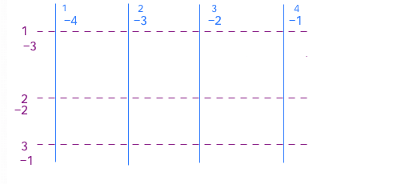
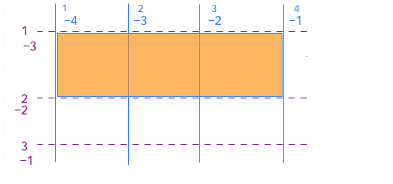
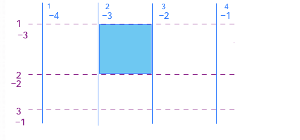
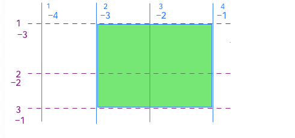
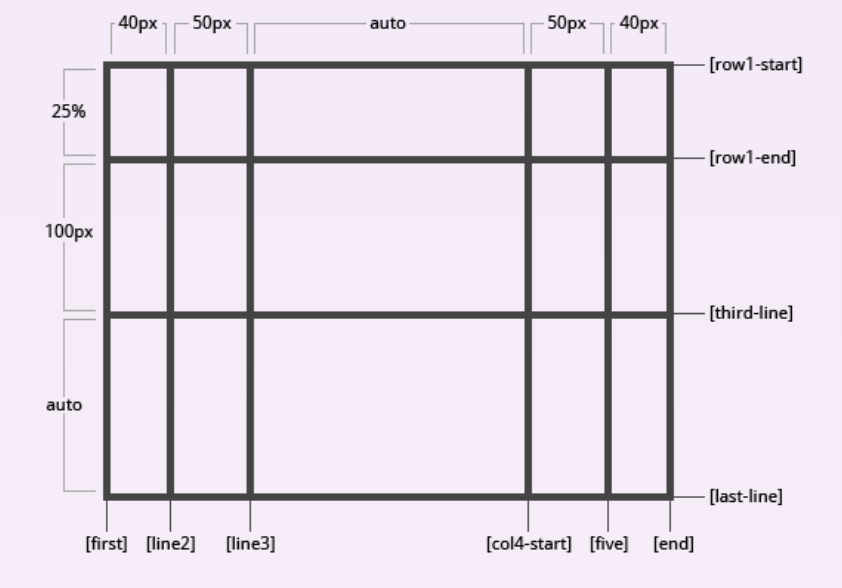
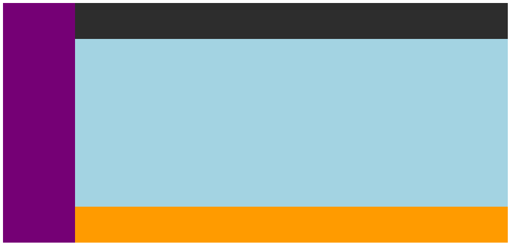
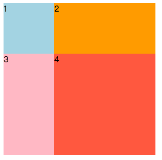
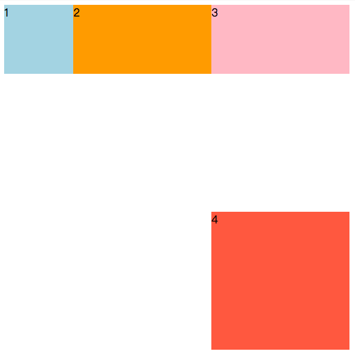

例子
grid布局的思想就是，先将一个container 设置上display:grid; ,然后使用grid-template-columns: & grid-template-rows 将这个div划分为多个小格子。然后使用grid-column & grid-row将子元素放置在一个或者多个小格子中。
代码实现。
See the Pen grid-start by akixiao (@akixiao) on CodePen.
css：
1 | .container { |
在container中：display:grid;声明这个container是采用grid布局的。
grid-template-XXX设置了这个div的网格式布局的基本。
在item中：grid-column-xxx设置了这个div在grid中所占有的布局。
grid布局中新增了一些知识，下面就利用这个例子来分别解释gird布局中的一些基本术语。
基础知识
grid容器（grid container）
设置了display:gird|inline-grid|subgrid的元素，被称为grid container。他是所有网格项目grid item的直接父元素。 如上面的div.container
grid项目（grid item)
grid container的子元素被称为grid item。如上面的div.grid-item
网格线 （grid lines）
网格线是水平和垂直方向来分割空间的线。水平方向的网格线是从左向右；垂直方向是从上往下。编号都是从1开始的。grid布局就是通过grid lines进行元素的布局的。通过grid-template等属性设置网格线。如果是负值，是从右往左方向。

按照最上面的例子，grid-template-columns: 1fr 1fr 1fr;
grid-template-rows: 100px 200px;
将空间分成了6个部分，水平方向3个格子，垂直方向2个格子。
相应的，gridline如上，有7条。三条紫色虚线为 row grid lines 。四条蓝色垂直虚线为column grid lines。 这七条线划分出了该grid的6个子空间，之后可以根据网格线号码定位网格项目。 网格线还可在定义轨道的时候，进行命名。 详见[grid-template]
网格轨道（grid track）
两条邻近grid line之间的空间就是grid track。通过grid-template设置。

其中半透明橘黄色就是一个grid track。
grid cell
两条邻近的row grid line 和两条邻近的column grid line 之间的空间。是grid布局的基础单元。所有的布局都可以通过选择不同范围的grid cell 来实现。如下面的蓝色方块。

grid area
任意四条线间的空间，被称为grid area，由多个grid组成。如下绿色部分，如果用css表示该部分应该是。grid-row: 2/4grid-column: 1/3
或者
grid-row: -3/-1grid-column: -3/-1

gutters
tracks 之间的间隔，如例子中的深灰色的部分。
可以通过grid-column-gap, grid-row-gap, or grid-gap来设置。
grid container
display
【display:grid|inline-grid|subgrid】
第三个是指，当grid container 本身是一个grid item，也可以通过设置这个属性，进一步对该item进行网格式布局。
声明这个container是grid形式的。因此在块容器中的一些属性使用并不适用于网格容器当中:
- 多列布局属性column-*不能用于网格容器
- float ，clear, vertical-align 都不生效
- ::first-line和::first-letter伪元素不能用于网格容器
grid containe的可用css属性如下：
grid-template
是grid-template-row and grid-template-column 的缩写。显示的设定网格的行和列。
grid-template-column
【grid-template-column: [name] value …】
每写一个value值，则定义了一个轨道宽度。 单位可以是px em % fr。 这里fr是一个新单位，代表可用空间的比例。一个例子如下：
See the Pen grid-testone by akixiao (@akixiao) on CodePen.
grid-gap: 10px;grid-template-columns: 50px repeat(2, 1fr) 2fr;
这里是在水平方向上分为4个部分，长度分别是 50px 1fr 1fr 2fr。 1fr是怎么计算呢，其实就是 (width - 50 - 3*10) / 4px。fr就不需要我们自己主动计算百分比了，他会自行计算。更准确。
代码https://codepen.io/akixiao/pen/jaRRQL
repeat() 可以创建重复的网格轨道, 接受两个参数：第一个参数定义网格轨道应该重复的次数，第二个参数定义每个轨道的尺寸。
1 | grid-template-columns: 50px repeat(3, 1fr) |
minmax() 网格轨道最大最小尺寸。
minmax()函数接受两个参数：第一个参数定义网格轨道的最小值，第二个参数定义网格轨道的最大值。可以接受任何长度值，也接受auto值。auto值允许网格轨道基于内容的尺寸拉伸或挤压。
1 | grid-template-rows: minmax(100px, auto) 50px; |
这个就是意味着，第一行的高度最小为100px，可以超过，第二行高度为50px; 第一列的宽度最大为25%，可以根据其他列适当缩小值，其余列为定义的值。
实际例子：
See the Pen grid-test-minmax by akixiao (@akixiao) on CodePen.
name代表什么呢？这里是指网格线名称。假如我写了如下的grid-template（这里copy了一下，偷懒了）
1 | .container { |

当我们在grid items中布局的时候，可以不用在写编号了，写name就可以了。例如：
1 | .item { |
如上写法，这个item将占据 width：90px;height: 25%*height + 100 px 的空间，相当于左上角四个grid。
grid-template-row
【grid-template-row: [name] value …】
先来说value，每写一个值，则定义了一个轨道高度。 单位可以是px em %。其余与column相似。 内容与grid-template-column相似，不多说了。
grid-template-areas
【grid-template-areas: [name]|none|.】
这个属性，就是将轨道分出来的每个grid 都赋予一个name，然后grid items 可以根据name来进行布局。不多说，上例子更明确
1 |
|
1 | <div class="container"> |
结果图： 
代码
关于简写的grid-template: 综合grid line，grid track，grid area。
1 | grid-template-columns: 120px auto; |
等价于
1 | grid-template: [row-1] "sidebar header" 60px |
grid-gap
这个是，grid-row-gap和grid-column-gap的缩写。
创建的是轨道间的距离。如最开始的例子：
grid-gap: 10px;
这个等价于：
grid-row-gap: 10pxgrid-column-gap: 10px
下面是grid 元素的对齐方式：
justify-items
align-items
这两个分别是指定网格项目沿着行轴的对齐方式，和沿着列轴的对齐方式。
可用的属性有： 解释都是以justify-items为例，align-items请自动转换为相对于纵轴来说。
- start: 内容居左排列
- end: 内容居右排列
- center: 内容居中排列
- stretch: 默认值，横跨整个row 轴
justify-contents
align-contents
这两个是网格轨道的对齐方式，分别相对于justify-contents指定网格轨道沿着列轴的排列方式，其实就是row网格轨道在垂直方向上的排列情况。和align-contents网格轨道沿着row轴的排列方式，是column网格轨道在水平方向上的排列情况。
可用属性：
- start：居左
- end： 居右
- center: 居中
- strech： 拉伸
- space-around：每个轨道两边距离相同
- space-between：第一和最后的羽绒器边缘没有间距，其他轨道距离相同。
- space-evenly：轨道距离容器边缘和轨道间的距离都相同。
grid-auto
grid-template-columns,grid-template-rows,grid-template-areas可以定义显示的网格，给出确定的网格轨道宽高，和明确的grid数量。也可以使用grid-auto-rows和grid-auto-columns创建隐式网格。
隐式网格，当项目被放置在template未规定的grid时，就会生成隐式网格。如果是按照template摆放的内容，就算定义了隐式grid，隐式grid也不会出现在展示中。
1 | .container { |
上面只显示定义了一个columns和rows。 如果不规定forth中的样式，则默认向1下方添加高度为200px，宽度为100px的div。如果在forth中设置了不存在的cell，则container会生成隐式grid，其他的div会根据顺序以添加了隐式grid进行排列。
当forth为
.forth { background: tomato; grid-row: 2; grid-column:2; }

.forth { background: tomato; grid-row: 3; grid-column:3; }

grid items
上面都是grid container的属性，下面介绍grid items 可以使用的各种属性。首先既然是grid item了，一些block的属性就不在适用了，如下：
- 浮动和清除浮动，对于网格项目中使用不生效。
- vertical-align属性对于网格项目不生效
grid-column
grid-row
grid-area
grid-area是grid-column & grid-row的缩写。或者是template中的area-name
缩写方式：
1 | grid-area: grid-row-start / grid-column-start/ grid-row-end / grid-column-end; |
grid-column: grid-column-start / grid-column-end;grid-row: grid-row-start / grid-row-end;
以上都要输入grid line的值: 这个值可以是数字，也可以是具体名称name，也可以是name-start/name-end。
一个命名的template-area，都会隐式的生成 4 条 grid-line的名称：
- area-start, area-end 行
- area-start, area-end 列
所以，在放置grid item 的时候，也可以不用grid-area, 用grid-column，grid-row输入隐式grid line 的名称即可。
还有一种方式，通过合并单元格的形式，对grid item进行布局。span关键词实现单元格的跨越，类似table中的合并单元格，比如colspan合并列，rowspan合并行。
1 | .item-2 { |
justify-self
align-self
含义及内容参考justify-items & align-items。 这个是可以在项目本身修改下自己的排列方式。